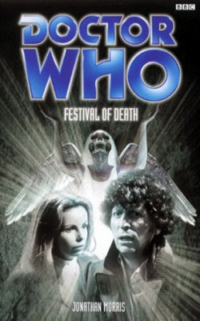

|
Festival of Death
|
BASIC PLOT DOCTOR COMPANIONS MATERIALISATION CIRCUIT Pg 70 On the G-lock, 12 hours earlier. Pg 157 Elsewhere on the G-lock, but at the same time. Pg 199 On the G-lock, 2815. Pg 224 On the G-Lock, back in 3012, but earlier than all the others. Pg 270 On the G-Lock, shortly afterwards. PREPARATORY READING CONTINUITY REFERENCES "His lack of academic achievements was a sore subject with him, and typically he was trying to bluster his way out of the argument." The Ribos Operation. Pg 9 "I'm going outside. I may be some time." Also said by the Doctor in Planet of Evil. Pg 10 "The beam settled on the bulkhead door, and the Doctor pulled a triumphant sonic screwdriver from the depths of his pockets." Fury From the Deep et al. "'Where would I be without my sonic screwdriver?' 'Still locked in a basement in Paris, presumably'" City of Death. Pg 12 "The Doctor took out his bag of jelly babies, selected one, and munched it." Robot et al. Pg 63 "He thrust a microphone under K9's nose and Jeremy backed away to fit them both in shot." Reference to the way that episodes with K9 in them always had to be shot to include a small tin dog and an actor the height of Tom Baker. See Full Circle for a particularly obvious example. Pg 70 "The whole "blossomiest blossom" vibe!" Riff on the daisiest daisy, from The Time Monster. Pg 135 "Of course, Time Lords could stop their hearts beating for a short time, and enter a state of suspended animation." Pyramids of Mars. Pg 203 "I'll never be cruel to a jelly baby again." Parody of a line from The Pirate Planet. Pg 215 "Evil from beyond the dawn of time. The usual sort of thing, I should expect." The Curse of Fenric. Pg 243 "It is a far, far better thing that I do now" The Ultimate Foe. Pg 244 "'Out, out brief candle!' hammed the Doctor." Revenge of the Cybermen. Pgs 253-254 "K9 extended his nose laser and swiped a beam of red light over the ceiling, across a conspicuous fault line where a recent crack had been replastered." Reference to poor special effects in the Williams era, specifically The Invisible Enemy. Pg 269 "You can't rewrite a single line." The Aztecs. OLD FRIENDS AND OLD ENEMIES NEW FRIENDS AND NEW ENEMIES Investigators Rige and Dunkal.
CONTINUITY COCK-UPS PLUGGING THE HOLES [Fan-wank theorizing of how to fix continuity cock-ups] FEATURED ALIEN RACES Pgs 7-8, 21 The Arboretans are egg-laying vegetable creatures, with baggy, transparent green skin. Pg 101 Zombies. Pg 102 The Yetraxxi, who have long necks. Pg 187 Arachnopods, giant spiders with detachable limbs. They're born hungry. Pg 253 The Repulsion. It has no physical form, so it takes the shadow of others. FEATURED LOCATIONS Pgs 17/115 The G-Lock, a set of interlocking spaceships at the mouth of a hyperspace tunnel, 3012. Pg 66 The Indigo Glow. Pg 69 The Indigo Glow, one week earlier. Pgs 115/136 The G-Lock and the ships that make it up, 2815. Pg 250 The Realm of the Repulsion. IN SUMMARY - Robert Smith? |
|
 |